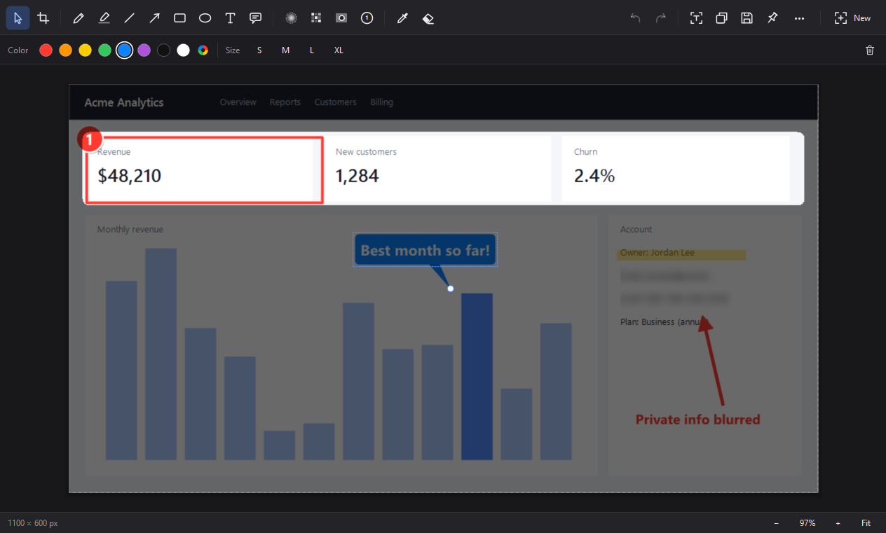

New in 1.1 Text recognition, snip history & spotlight →
Snip, mark up, share.
 Untitled snip — Snipp— ▢ ✕
Untitled snip — Snipp— ▢ ✕
Snip, mark up, share.
In seconds.
Snipp is a fast, tiny screen snipping tool for Windows with a powerful built-in editor. Press PrtSc, select, annotate, done.
